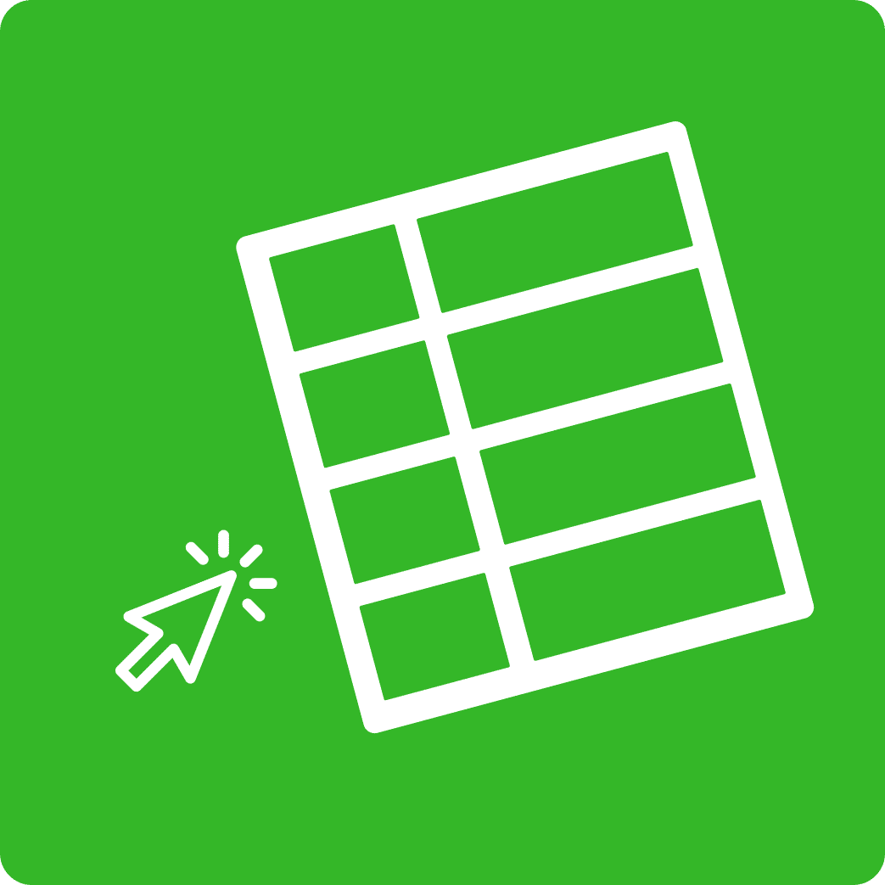

A sua jornada de capacitação digital começa aqui.
Conheça os cursos do programa Futuro Digital e transforme a forma como trabalha em equipa na CMLisboa com as ferramentas Microsoft.
Cursos Disponíveis
Formações práticas e focadas nas ferramentas que potenciam a colaboração e produtividade da sua equipa no dia a dia.
Microsoft Word
Domine a criação e redação de documentos profissionais com o poder da coautoria em tempo real.

Microsoft Excel
Analise dados de forma poderosa e colabore em folhas de cálculo complexas com a sua equipa na nuvem.
Microsoft Loop
Trabalhe de forma colaborativa com o Microsoft Loop. Centralize informações, crie listas de tarefas e organize projetos em tempo real.
Microsoft Excel e Forms
Crie inquéritos, recolha respostas automaticamente e analise resultados em tempo real com o Excel na nuvem.
Sobre o Programa Futuro Digital
O Programa para a Inclusão e Literacia Digital da Câmara Municipal de Lisboa tem como missão capacitar os seus colaboradores e todos os cidadãos com as competências digitais essenciais para os desafios do presente e do futuro, promovendo uma cidade mais conectada, eficiente e inclusiva.
Conheça os CursosO Que Dizem os Nossos Formandos
Testemunhos reais de participantes que melhoraram a sua forma de trabalhar.
“Excelente formação! Muito prática e com impacto direto no meu trabalho diário. Consegui automatizar relatórios que me demoravam horas.”
Pronto para Começar?
O curso está aberto a todos os cidadãos maiores de 18 anos e trabalhadores da CMLisboa.
Trabalhadores CMLisboa
A inscrição é feita através da aplicação do Departamento de Desenvolvimento de Formação (disponível na rede interna) ou descarregando a ficha de inscrição.
Cidadãos
Todos os cidadãos com mais de 18 anos podem inscrever-se diretamente através do formulário de inscrição online. Garanta a sua vaga!
Inscrição Cidadãos